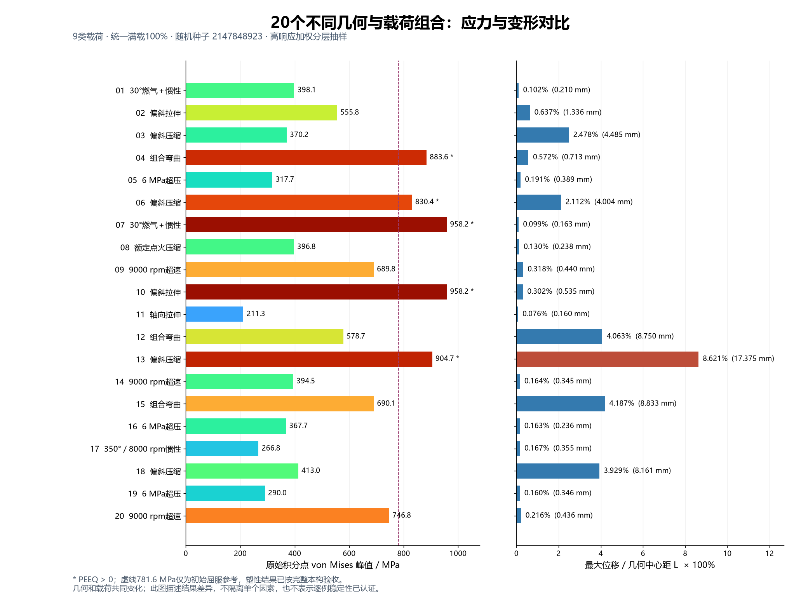

20套不同几何 · 9类载荷 · 与上一批20图无几何重复 · 全部满载100%
从已有1000个有效结果中作高响应加权、分层随机抽取，保留随机种子。包含6 MPa超压、9000 rpm超速及大位移响应。同类载荷可出现在不同几何；几何与载荷共同变化，本页比较结果差异。

应力云图统一0–1000 MPa、相同视角与物理尺度、真实变形×1。原始峰值独立列出；表面平均只用于显示。平衡不等于稳定，未逐例作稳定性认证。
勾选最多4例，再点“比较勾选项”；点击图像看原图。下方先放应力、位移、转速和压力代表。